10 Amazing Facts About the Human Body That Will Surprise You
Your body performs extraordinary tasks every second. Explore ten fascinating facts about the systems that keep you alive.
7 min read · 2026-11-20
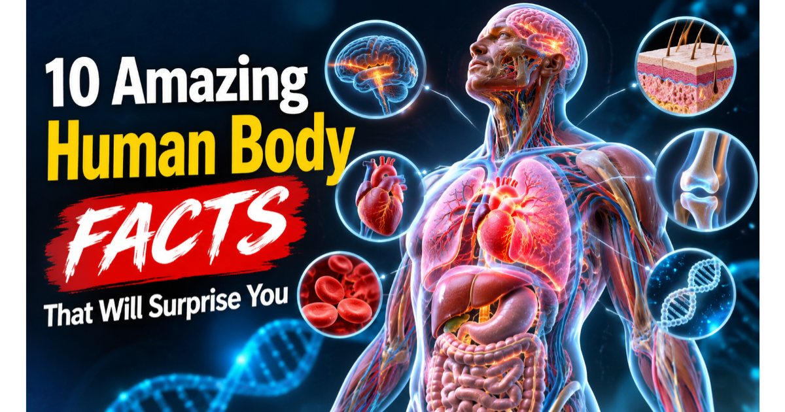
The human body is one of nature's most fascinating and complex systems. Every second, countless biological processes take place inside us, even when we are sleeping, relaxing, or simply sitting still. From the heart that pumps blood to the bones that support our structure, the body performs remarkable tasks that most people rarely stop to consider. Here are ten science-based facts that may change the way you look at yourself.
1. Your Heart Beats Around 100,000 Times a Day
An adult heart typically beats tens of thousands of times each day. A commonly used estimate is about 100,000 beats in 24 hours, although the actual number varies with age, activity, health, and resting heart rate.
Your heart keeps pumping blood to deliver oxygen and nutrients throughout your body. It continues working while you sleep, without requiring conscious control.
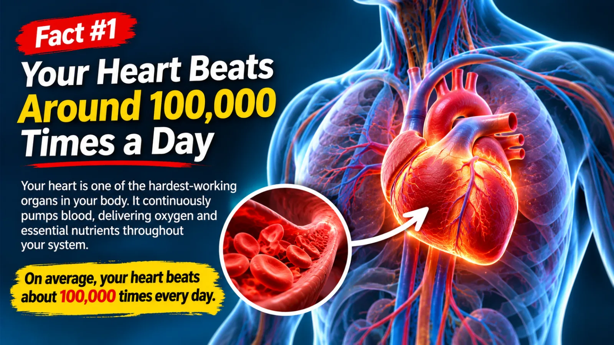
Your heart is one of the hardest-working organs in your body. It continuously pumps blood, delivering oxygen and essential nutrients throughout your system. On average, an adult heart beats around 100,000 times every day.
2. Babies Have More Bones Than Adults
A newborn has around 270 to 300 bones or bone elements, depending on how they are counted. Most adults have 206 bones.
As a child grows, some bones gradually fuse together. This is one reason the adult skeleton has fewer separate bones than a newborn's skeleton.
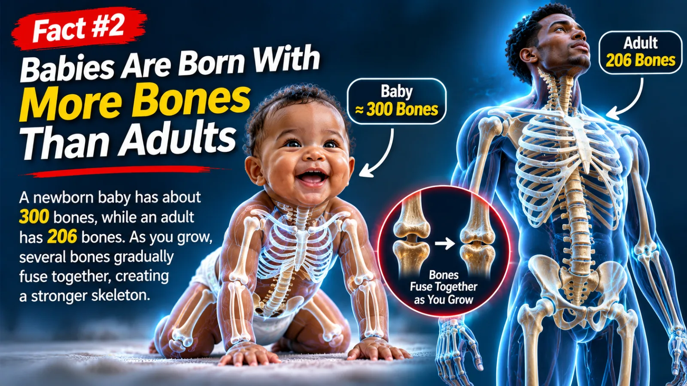
Did you know that babies are born with approximately 300 bones, while adults typically have 206? As children grow, several bones gradually fuse together, forming the stronger skeletal structure found in adulthood. The human body is truly amazing!Continue Reading →
3. Your Skin Is Your Largest Organ
The skin is the body's largest organ by surface area and mass. It forms a protective barrier, helps regulate temperature, reduces water loss, and contains sensory receptors.
Those receptors help you detect touch, pressure, and temperature, allowing you to respond to your surroundings.
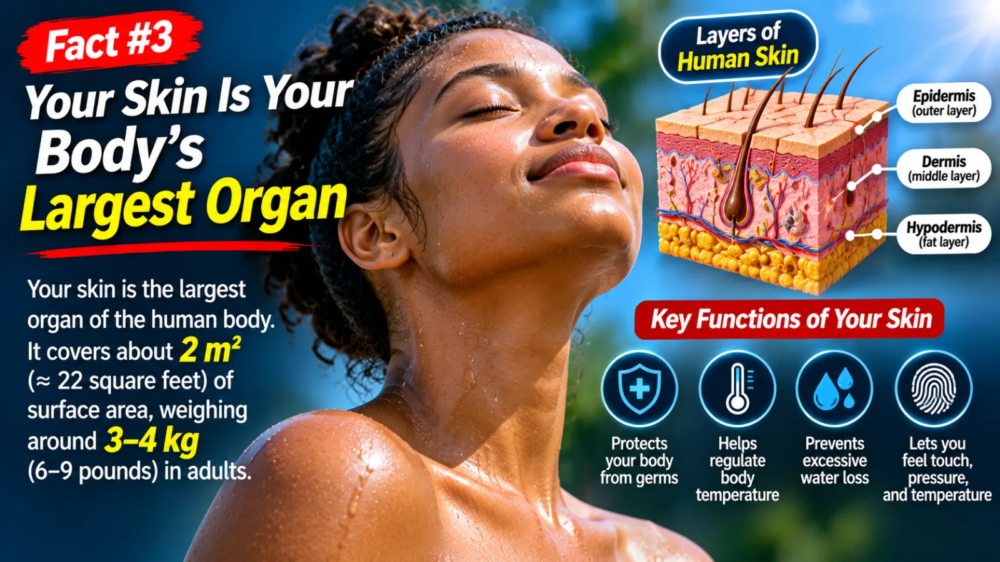
Did you know that your skin is the largest organ of your body? In adults, it covers approximately 2 square meters and weighs around 3–4 kilograms. Beyond protecting you from the outside environment, your skin helps regulate body temperature, prevents excessive water loss, and allows you to feel touch, pressure, and temperature. Your skin does much more than you might imagine!
4. Red Blood Cells Usually Live for About 120 Days
Red blood cells carry oxygen from the lungs to tissues throughout the body. They contain haemoglobin, a protein that binds oxygen.
A typical red blood cell circulates for about 120 days before it is removed, mainly by the spleen and liver. The body continually makes new blood cells to replace aging ones.
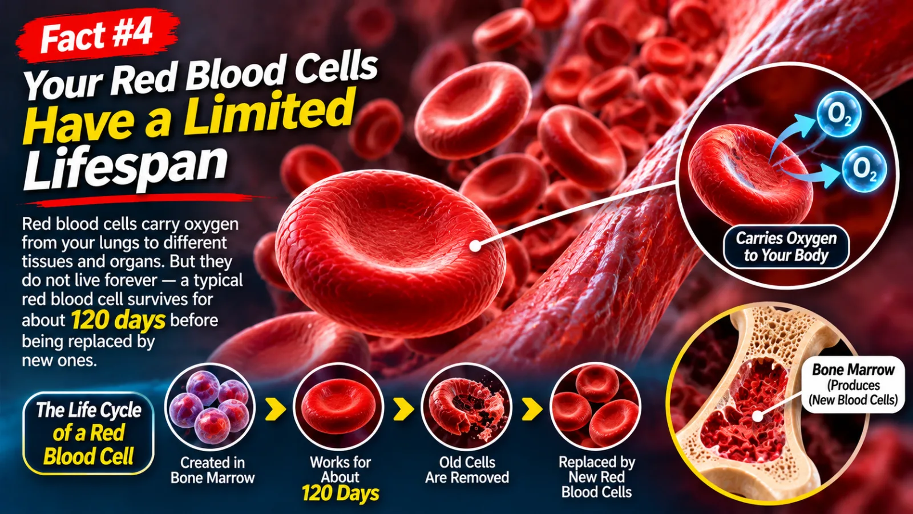
Did you know that your skin is the largest organ of your body? In adults, it covers approximately 2 square meters and weighs around 3–4 kilograms. Beyond protecting you from the outside environment, your skin helps regulate body temperature, prevents excessive water loss, and allows you to feel touch, pressure, and temperature. Your skin does much more than you might imagine!Continue Reading →
5. Your Bones Are Living Tissue
Bones are not lifeless structures. They contain living cells, blood vessels, and nerves, and they are continually renewed through a process called bone remodeling.
Bones support the body, protect organs, store minerals, and contain marrow that produces blood cells.
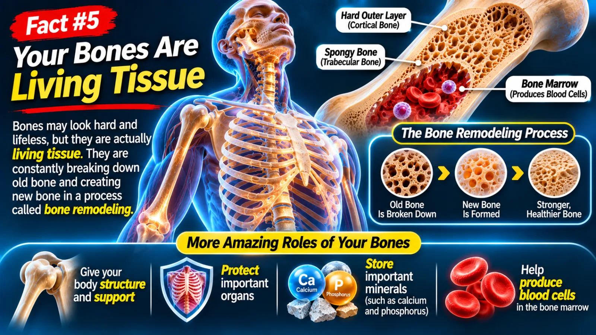
Did you know that your red blood cells have a lifespan of approximately 120 days? These tiny cells work tirelessly to transport oxygen from your lungs to tissues and organs throughout your body. Once they become old, they are removed from circulation and replaced by newly produced red blood cells. Your body is constantly renewing itself!
6. Your Heart Begins Beating Before Birth
The developing heart starts to beat very early in pregnancy, around the fifth to sixth week of gestational age when counted from the last menstrual period. This is well before birth.
The heart then develops and changes as the embryo and fetus grow, preparing to support circulation after delivery.
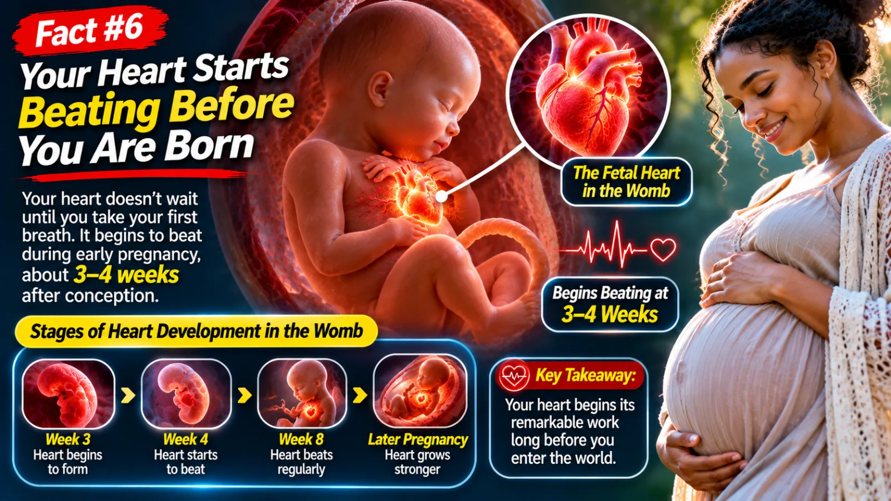
Did you know that your heart begins beating long before you are born? The developing heart starts beating during early pregnancy, approximately 3–4 weeks after conception. Even before a baby takes its first breath, this remarkable organ has already begun its important journey of supporting life. Isn't that incredible?Continue Reading →
7. Sweating Helps Cool Your Body
When your body becomes too warm, sweat glands release moisture onto the skin. As that sweat evaporates, it removes heat and helps cool you down.
Your brain and nervous system coordinate several temperature-control responses, including sweating, changes in skin blood flow, and shivering when you are cold.
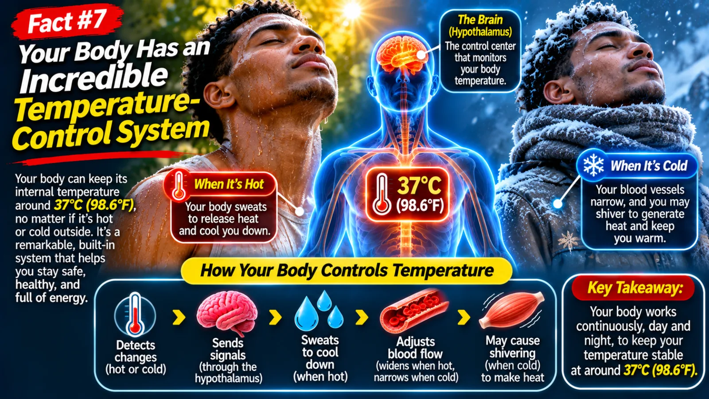
Did you know that your heart begins beating long before you are born? The developing heart starts beating during early pregnancy, approximately 3–4 weeks after conception. Even before a baby takes its first breath, this remarkable organ has already begun its important journey of supporting life. Isn't that incredible?
8. Bone Marrow Makes Important Blood Cells
Red bone marrow is a soft tissue inside certain bones. It produces red blood cells, many white blood cells, and platelets through a process called blood cell formation.
These cells have different jobs: red blood cells transport oxygen, white blood cells help defend against infection, and platelets help blood clot.
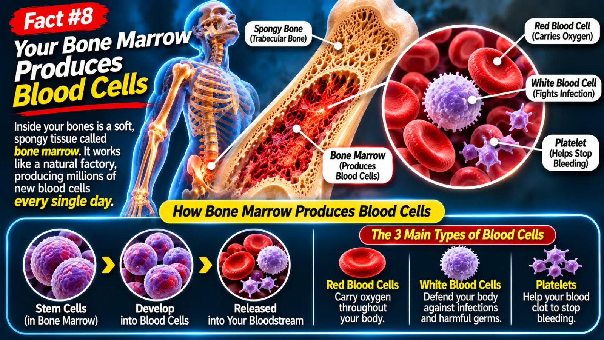
Did you know that your bones contain a remarkable blood cell factory? Inside certain bones, a soft tissue called bone marrow produces essential blood cells every day. Red blood cells carry oxygen, white blood cells help fight infections, and platelets help stop bleeding when you get injured. Without healthy bone marrow, your body would struggle to maintain its blood supply and immune defenses. The human body is truly incredible!Continue Reading →
9. Sunlight Helps Your Skin Make Vitamin D
When skin is exposed to ultraviolet B (UVB) radiation, it begins a process that allows the body to produce vitamin D. Vitamin D helps the body absorb calcium and supports bone health.
The amount produced varies with factors such as skin pigmentation, age, location, season, clothing, and time outdoors. Too much UV exposure can damage skin, so sensible sun protection remains important.
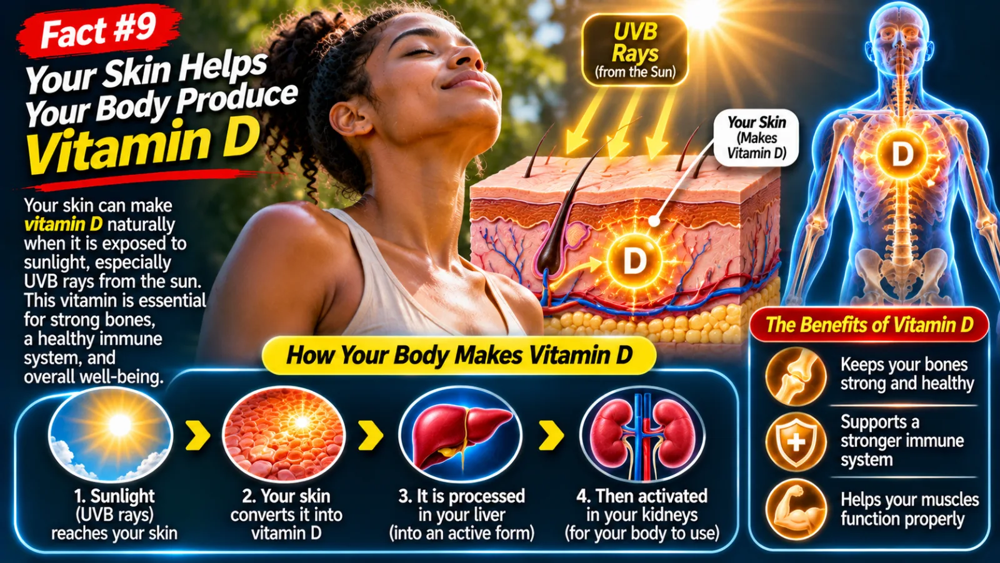
Did you know that your bones contain a remarkable blood cell factory? Inside certain bones, a soft tissue called bone marrow produces essential blood cells every day. Red blood cells carry oxygen, white blood cells help fight infections, and platelets help stop bleeding when you get injured. Without healthy bone marrow, your body would struggle to maintain its blood supply and immune defenses. The human body is truly incredible!
10. The Smallest Bone Is Inside Your Ear
The stapes, one of the three tiny bones in the middle ear, is the smallest bone in the human body. It is only a few millimetres long.
Together, the middle-ear bones transmit vibrations from the eardrum toward the inner ear, helping make hearing possible.
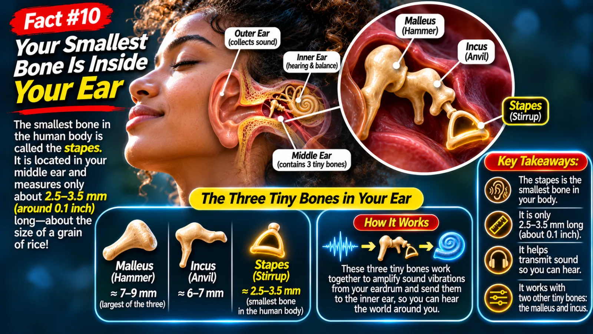
Did you know that your skin can produce vitamin D when exposed to sunlight? Specifically, ultraviolet B (UVB) rays trigger a natural process in your skin that helps your body make this essential vitamin. Vitamin D plays an important role in calcium absorption, bone health, muscle function, and immune system support. However, excessive sun exposure can damage your skin, so protecting yourself from harmful UV radiation is important too!
“I praise you because I am fearfully and wonderfully made.”
Psalm 139:14 (NIV)
The human body is an extraordinary biological system. From a heart that beats while you sleep to bones that continually renew themselves, your body performs countless remarkable processes every day. The more we learn about anatomy and physiology, the more we can appreciate the systems that make everyday life possible. Which of these ten facts surprised you the most? Share your thoughts and discover more with Jaziel Story.